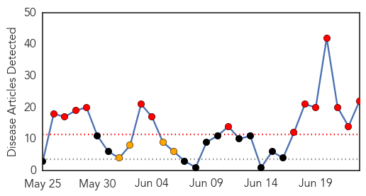

30 Day Trends
Web: 14 alerts, 4 warnings
Twitter: 3 alerts, 0 warnings
Top Articles:
- 1.000
- Sierra Leone Steps Up Measures to Tackle Ebola Outbreak — Naharnet
- 1.000
- Ebola In West Africa Is 'Totally Out Of Control,'
- 1.000
- Physicians Say Massive Deployment Needed to Fight Ebola Virus Disease Epidemic in West Africa
- 1.000
- Observer and Eccentric Newspapers and Hometown Weeklies
- 1.000
- Ebola epidemic unprecedented in West Africa, medical aid group says
- 0.999
- West African Ebola epidemic "out of control"
- 0.999
- West African Ebola epidemic "out of control"
- 0.999
- West African Ebola epidemic 'out of control'
- 0.999
- Ebola virus outbreak is 'out of control' in West Africa
- 0.999
- Ebola virus in West Africa claiming hundreds of lives: Many fear it is now out of control
- 0.999
- What a relief!
- 0.999
- Ebola Is 'Out of Control,' Doctors Without Borders Says
- 0.999
- West African Ebola epidemic 'out of control': aid group
- 0.999
- UPDATE 2-West African Ebola epidemic out of control - aid group
- 0.999
- Current Ebola Outbreak Is Now The Worst In History And 'Totally Out Of Control'
- 0.998
- Ebola is "out of control" in West Africa, aid group says
- 0.998
- West African ebola epidemic 'out of control,' doctors warn in plea
- 0.997
- West Africa Ebola epidemic is 'out of control'
- 0.996
- West African Ebola epidemic out of control: aid group
- 0.995
- Doctors Without Borders: Ebola 'epidemic is out of control'
- 0.995
- الاخبار المصورة
- 0.982
- UPDATE 2-West African Ebola epidemic out of control - aid group
Top Tweets:
- 0.676
- RT: MSF warns that it has reached the limit of what it can do to fight the deadly outbreak of Ebola in West Africa http://t.co/CI…
- 0.676
- RT: Ebola Outbreak is 'OUT OF CONTROL' (and continues to spread in a city w/ an int'l airport). Read my latest for more: http:…
Web/News Articles
Tweets

Article Locations

Article Confidences